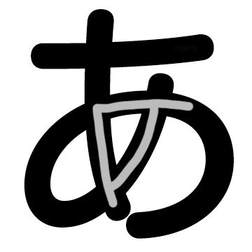
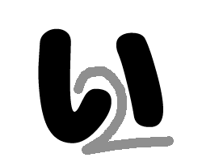
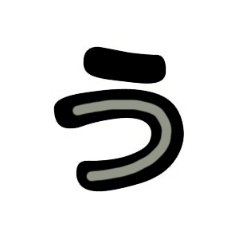
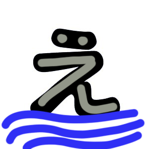
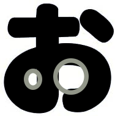
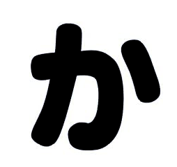

Hiragana ve Katakana başlıkta olduğu gibi genellikle birlikte kullanılırlar. Hiragana (ひらがな) Dersi(レスン).
Ders karakterlerine tek tek bakacak olursak レ - re, ス - su, ン - n yani "resun" olarak okunur. Şimdi sesli bir şekilde bunu tekrar edin.
İngilizce biliyorsanız kulağa "Lesson" kelimesini andırdığını farkedeceksiniz, İngilizce bilmiyorsanız benzerliği farketmemiş olabilirsiniz ancak en azından bir kelime Japonca öğrendiniz.
Başlamadan önce buradaki Japonca harflerin fazla havalı yazıldığını belirteyim görsellerdeki sade yazımların oldukça yeterli olduğunu bilmekte fayda var.
Hemen ilk karakterimize geçelim öyleyse
あ
Bu karakter "a" şeklinde okunur.

Tam ortasına dikkatlice bakarsanız Alfabemizdeki "A" harfine benzediğini görebilirsiniz. Aklınızda kalması için benim aklıma geldikçe bu şekilde mnemonic benzetmeler kullanacağım.
Aklıma gelmediği yerlerde kendiniz benzetmelerde bulunabilir ya da iletişim kısmından öneride bulunabilirsiniz.
İkinci karakterimiz
い
Bu karakter "i" şeklinde okunur.

Gördüğünüz üzere iki adet çizgiden oluşuyor ve içinde "2" var. Bunları farkettiğiniz zaman aklınıza "i" gelsin.
Üçüncü karakterimiz
う
Bu karakter "u" şeklinde okunur.

Bariz bir şekilde yan dönmüş "u" harfine benziyor. Buna benzer başka bir karakter daha var onun için bu karakteri tek seferde öğrenebilirseniz süper olur.
Dördüncü karakter
え
Bu karakter "e" şeklinde okunur.

Göld'e' yüz'e'n örd'e'ği görüyor musun? Ördeğin "e"si ? Biraz saçma oldu ancak anladığınızı düşünüyorum.
Beşinci karakter
お
Bu karakter "o" şeklinde okunur.

Ortasında iki adet "o" var.
Altıncı karakter
か
